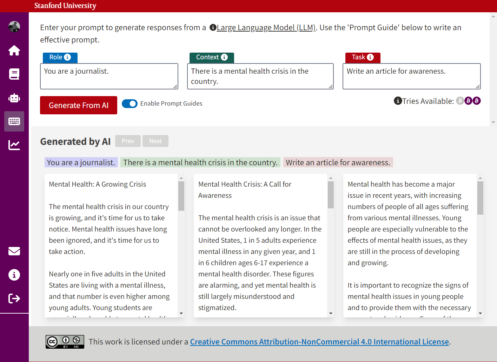

Prompty
Creators: Raycelle Garcia & Deepak Varuvel Dennison
A web resource developed for the Classroom-Ready Resources About AI For Teaching (CRAFT) co-design initiative at the Stanford Graduate School of Education to provide a hands-on educational experience with AI prompting.
I presented a conference paper, "From Consumers to Critical Users: Prompty, an AI Literacy Tool for High School Students", written about the design and evaluation of this tool at EAAI-24: The 14th Symposium on Educational Advances in Artificial Intelligence in the Special Track: Resources for Teaching AI in K-12.
My responsibilities in this project included:
- Researching AI prompting and relevant educational tools to understand the current needs and solutions available
- Mapping the learning mechanics that supports learners to reach learning outcomes
- Designing and building Figma prototypes
- Testing early web application versions
- Leading co-design discussion sessions with a high school classroom teacher
- Creating lesson plans and accompanying materials for the web app
- Evaluate qualitative feedback
- Writing a conference paper on the design and evaluation of the tool
Theory of Change
{kind=link}
Screenshots
Figma Click-through Prototype
Web Application
